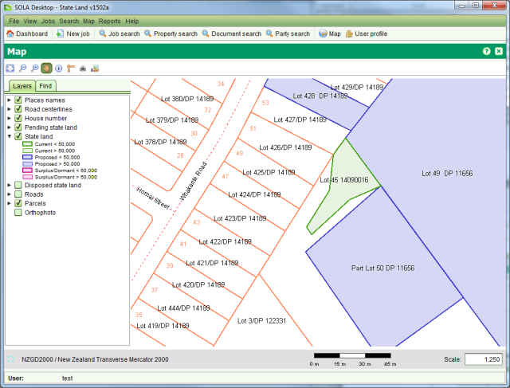

All parcel changes made using the Create or Change Parcels task remain pending until the job
containing the Create or Change Parcels task is approved. You can approve the job by
completing all tasks on the job and approving it using the Approve tool  in the Job action dropdown. Any new or modified
parcels will then show as State Land Parcels in the SOLA Map Viewer.
in the Job action dropdown. Any new or modified
parcels will then show as State Land Parcels in the SOLA Map Viewer.

Approved Job